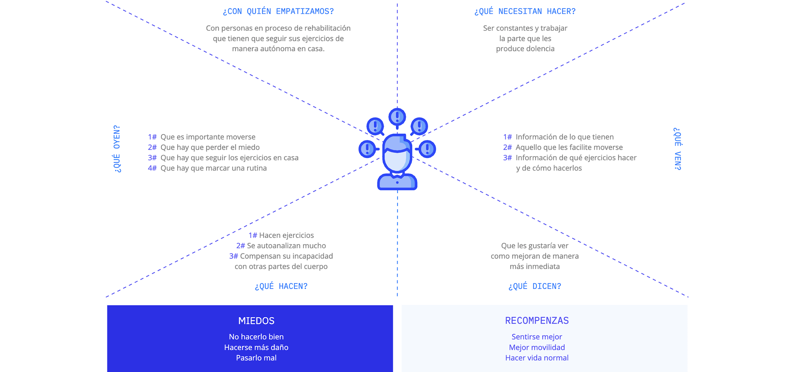
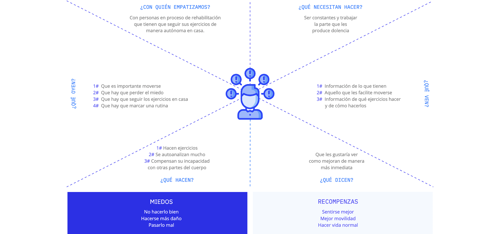
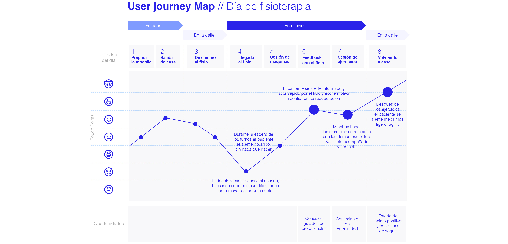

- INFO
-

La App de ejercicios de rehabilitación y fisioterapia
que ayuda a los pacientes a seguir con sus ejercicios en casa.
Phytool es el resultado de un trabajo de investigación, en el que se determinó que en un proceso de rehabilitación es necesario llevar la práctica de los ejercicios físicos más allá del centro fisioterapéutico al que se asiste y por lo tanto, que para obtener mejores resultados es necesario trabajar las rutinas tambien en casa. Sin embargo más del 75% de los pacientes no lo hace por varios motivos.
 

En esta fase inicial ordenamos las ideas principales y focalizamos en los inconvenientes que impiden al usuario ser constantes con sus rutinas en casa: La falta de memoria de tiempo, de motivación y la desconfianza que les genera no estar seguros de si haran bien los ejercicios o no y se harán más daño.

En esta fase inicial se consegue ordenar las ideas principales y focalizar en los inconvenientes que impiden al usuario ser constantes con las rutinas en casa: La falta de memoria de tiempo, de motivación y la desconfianza que les genera no estar seguros de si harán bien los ejercicios o se harán más daño.
En esta fase inicial se consegue ordenar las ideas principales y focalizar en los inconvenientes que impiden al usuario ser constantes con las rutinas en casa: La falta de memoria de tiempo, de motivación y la desconfianza que les genera no estar seguros de si harán bien los ejercicios o se harán más daño.